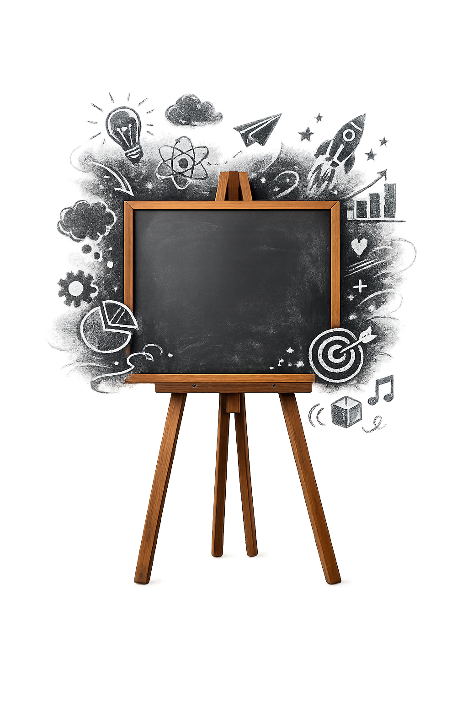
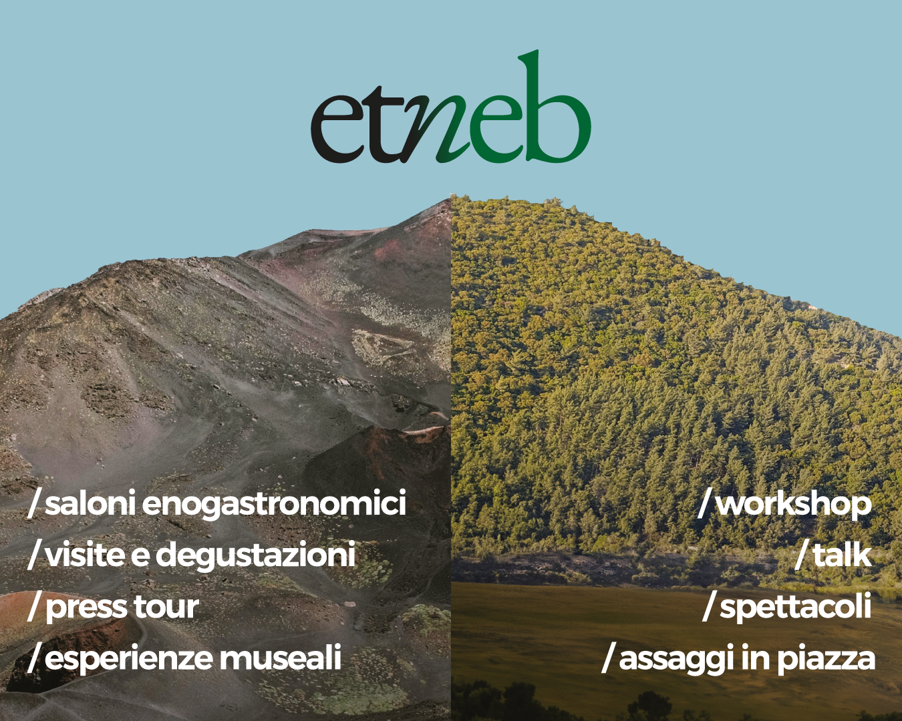
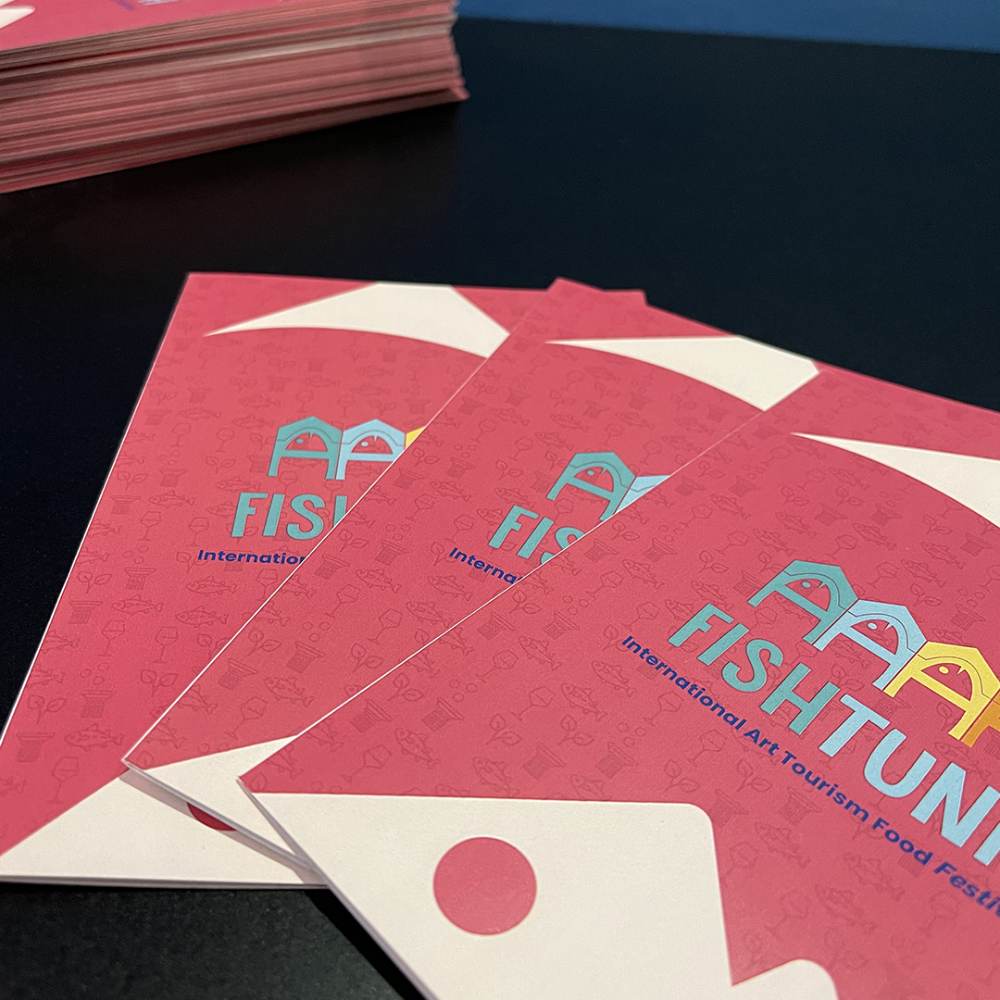
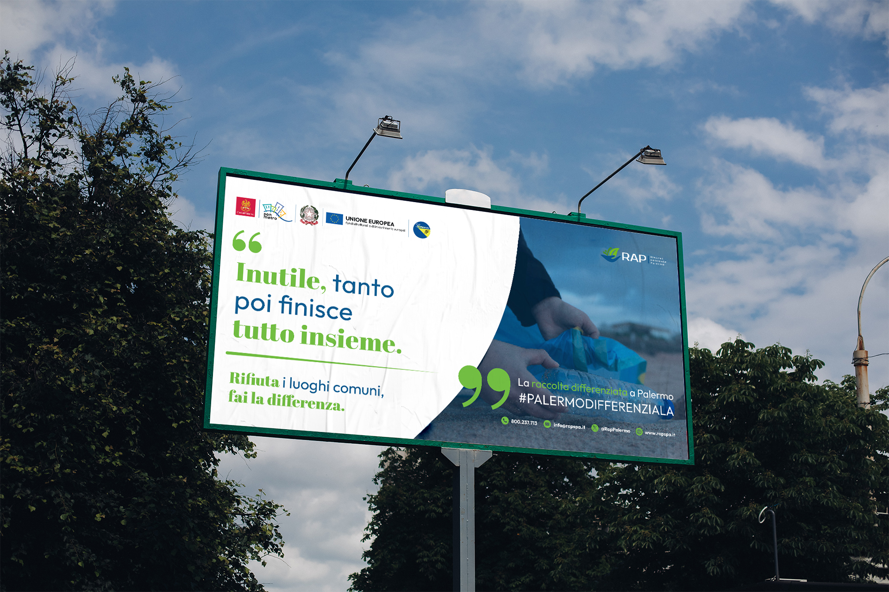
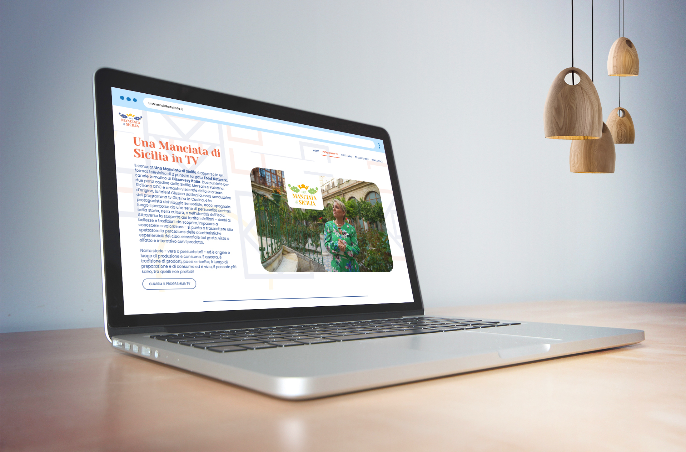

Concept
Parto dal significato, non solo dall'estetica.

Una lavagna creativa
Unisco visual e motion design, web design, UX/UI, modellazione 3D e tecnologie AI per dare vita alle tue idee.
Come progetto
Una lavagna piena di idee buone, ma ordinate.
Parto dal significato, non solo dall'estetica.
Logo, impaginazione, animazione, interfacce e materiali visivi.
Esperienze leggibili, responsive e memorabili, tra impatto e usabilità.

Progetto in evidenza
Tra identità per eventi, campagne di comunicazione, materiali editoriali e progetti digitali, il mio lavoro cerca sempre un punto d'incontro tra estetica, strategia e ritmo narrativo.
Vai alla selezione completaProgetti selezionati

Brand identity
Loghi, elementi editoriali e asset coordinati pensati per vivere su supporti fisici e digitali.

Campagne di comunicazione
Una bella struttura vuole raccontare una bella storia! La combo perfetta per un progetto completo a 360°.

Format disparati
Qualunque sia il tuo progetto, esiste il giusto mezzo per realizzarlo e se tu non lo conosci, te lo dico io!
Contattami
Progettiamole insieme!